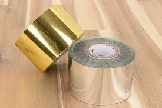
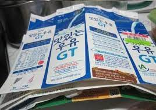
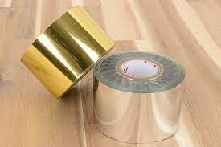
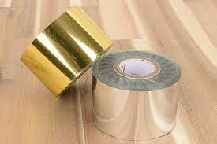
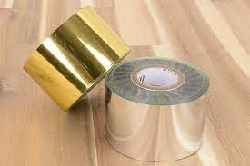
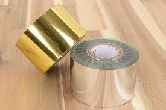

종이류 / 종이팩
종이
종이 종류에는 택배박스 노트 책 전단지 신문지 종이쇼핑백등이 있다.
이물질이 묻지 않은 종이는 나중에 새 종이나 노트류로 재활용이 가능하다.
만일 이물질이 묻은 종이나 다른 재질이 혼합된 종이는 일반쓰레기로 종량제 봉투에 넣어서 버려야한다.

종이팩
휴지나 미용티슈로 재활용이 가능하기 때문에 종이와 따로 분류해서 버려야한다.
안에 내용물을 비우고 물로 헹군 후 압착하여 봉투에 넣거나 한꺼번에 묶어서 배출하도록 한다.
잘 말린 종이팩은 200ml 기준 100매를 모아서 동주민센터로 가져가면 화장지 1롤로 교환가능하다.

 

 
